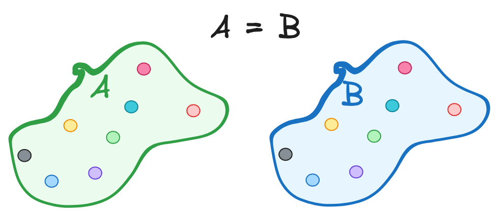
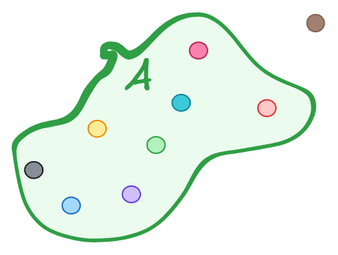

Set Theory; sets and classes
We will start with the basic concepts of set theory. Set theory is the branch of mathematics that studies sets - collection of objects.
Sets
A set is a collection of objects. The objects in a set are called elements or members of the set. A set is denoted by curly braces {}. For example, the set of natural numbers is denoted by
\[\mathbb{N} = \{ 0, 1, 2, 3, \ldots \}.\]
The formal definition of a set is given by the axioms of set theory. The axioms of set theory are a set of rules that define the properties of sets. A wildley used set of axioms is the Zermelo-Fraenkel set theory with the axiom of choice (ZFC).
To formaly define the axiom one needs to intruce terminology of formal logic, which is beyond the scope of this document. However, the axioms can be informally described as follows.
ZFC Axioms:
- Axiom of Extensionality: Two sets are equal if they have the same elements.

- Axiom of Regularity: Every non-empty set has an element that is disjoint from the set.

- Axiom of Pairing: For any two sets \(a\) and \(b\), there exists a set \({a, b}\) that contains \(a\) and \(b\) as elements.
- Axiom of Union: For any set \(a\), there exists a set \(\bigcup a\) that contains all the elements of the sets in \(a\).
- Axiom of Power Set: For any set \(a\), there exists a set \(\mathcal{P}(a)\) that contains all the subsets of \(a\).
- Axiom of Infinity: There exists a set \(\mathbb{N}\) that contains the natural numbers.
-
Axiom of Replacement: For any set \(a\) and any function \(f\), there exists a set \(\{f(x) | x \in a\}\) that contains the images of the elements of \(a\) under \(f\).
and the axiom of choice:
-
Axiom of Choice: For any set \(a\) of non-empty sets, there exists a set \(c\) that contains exactly one element from each set in \(a\).
Classes
The axiomatization of set theory was developed by Georg Cantor in the late 19th century. Cantor's work was based on the idea of a class. As the naive set theory encountered paradoxes, mathematicians began to develop a more rigorous theory of sets. The Zermelo-Fraenkel set theory with the axiom of choice (ZFC) is the most widely used set theory today. One of intuitivistic paradoxes that led to the development of ZFC is the Cantor's paradox that there is no set of all sets. The paradox arises from the set of all sets that do not contain themselves. If such a set exists, then it must contain itself, which contradicts the definition of the set. The paradox is resolved by introducing the concept of a class.
A class is a collection of sets. The objects in a class are called sets. A class is denoted by square brackets []. For example, the class of all sets is denoted by \({x | x = x}\). The class of all sets is not a set because it contains itself. The class of all sets is called a proper class. A proper class is a class that is not a set. The class of all sets is a proper class because it contains itself.
Mappings
A mapping is a relation between two sets that associates each element of the first set with exactly one element of the second set. A mapping is denoted by an arrow \(\to\). For example, the mapping
\[f: A \to B\]
associates each element of set \(A\) with exactly one element of set \(B\).
The set \(\mathbb{A}\) is called the domain of the mapping, and the set \(B\) is called the codomain of the mapping. The element of the set \(A\) is called the input of the mapping, and the element of the set \(B\) is called the output of the mapping. The mapping \(f\) is called a function if it associates each element of set \(A\) with exactly one element of set \(B\).